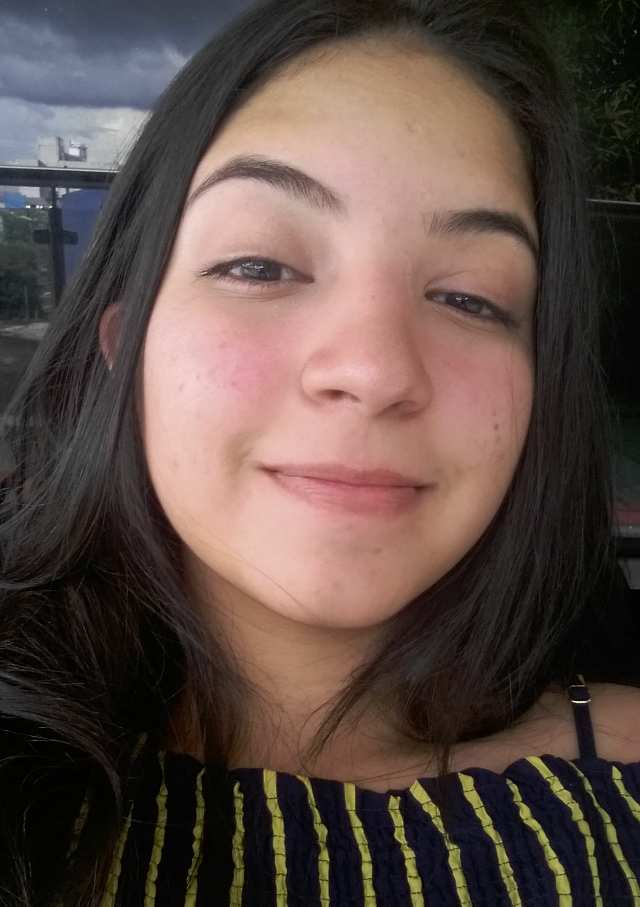

Currículo
Anny Karoline Travassos Viana
Endereço, e-mail e contatos
Rua Pindaro 177, São José 1 - Manaus, AM - Brasil
Nascimento: 20 de maio de 2002
Telefone: +55 092 982541977
Email: karolinechaar77@gmail.com
Qualificações Acadêmicas
- Ensino Fundamental
CAPB - Colégio Adventista Paul Bernard
Manaus, AM - Brasil
2008-2012
CDBL - Colégio Dom Bosco Leste
Manaus, AM - Brasil
2011-2011
CETI - Elisa Bessa Freire
Manaus, AM - Brasil
2013-2016
- Ensino Médio
Fundação Matias Machline
Manaus, AM - Brasil
2017 - Até o presente momento
Histórico de Experiência Acadêmica
- Presidente do Grêmio Estudantil
CETI - Elisa Bessa Freire
Representante geral dos interesses escolares dos alunos
Março de 2016 - Novembro de 2016
- Monitora de Língua Portuguesa e Matemática
CETI - Elisa Bessa Freire
Aulas de reforço externo/interno e resolução de exercícios
Abril de 2016 - Novembro de 2016
- Projeto de Monitoria e Aulas de Inglês
CETI - Elisa Bessa Freire
Monitora de Aulas de Inglês
Março de 2016 - Novembro de 2016
- Projeto de Alunos enxadristas
CETI - Elisa Bessa Freire
Tutora e monitora do projeto de Alunos enxadristas
Fevereiro de 2016 - Novembro de 2016
- Projeto Blog Curumim Escritor
Fundação Matias Machline
Equipe de Marketing e Apresentação de Dança do Projeto
Fevereiro de 2018 - Novembro de 2018
- Princípio de Desenvolvimento do Sofware Donor
Fundação Matias Machline
Software de Auxílio de coleta de doações monetárias
Março de 2018 - Novembro de 2018
o projeto não foi concluído
- Desenvolvimento do Projeto Luce
Fundação Matias Machline
Aplicação Mobile de Auxílio ao Processo de Desenvolvimento Cognitivo para de Crianças de 6 a 12 anos com Síndrome de Down
Janeiro de 2019 - Até o presente momento
Idiomas (spoken/written/reading)
Inglês (Intermediário/Intermediário/Intermediário)
> Nível 6 de acordo com a prova de Domínio Aslan -
Aprendi vendo séries/filmes e músicas
Cursos Relevantes
- Design Gráfico - Ced@spy Manaus
- Desenvolvimento Web - Ced@spy Manaus
- Documentos Profissionais - Ced@spy Manaus
- Montagem e Manutenção de Micros - Ced@spy Manaus
- Marketing e Propaganda Empresarial - Ced@spy Manaus
- Manutenção e Instalação de Software - Ced@spy Manaus
- Técnico em Linguagem de Programação C - Fundação Matias Machline
- Técnico em Linguagem de Programação Java - Fundação Matias Machline
Outras Áreas de Interesse
- Projetos de Arquitetura
- Música
- Gastronomia
- Astronomia
- Animais
- Futebol
- Futebol Americano
- Basquete
- Economia
- Geopolítica
- Grandes Guerras
- Programação de Jogos e Web
Maior Ato de Coragem da Vida
Uma vez eu disse não para a minha mãe.
Descreva o dia que teve mais Sorte na Vida
Quando eu disse não pra minha mãe e ela não me matou.
Gosta de Animais de estimação? Descreva-os e referecie suas raças em sites da web.
Sim. Já tive um Pastor Alemão chamado Salgadinho, mas ele morreu muito velho e minha mãe disse que ele fugiu (mas eu sei que morreu). Também tive uma Rottweiler chamada Dara. Compramos ela com 2 meses de vida e ela morreu bem velha também, pouco tempo antes de dar a luz ao Lion, que estva conosco até uns meses atrás, porém morreu de câncer. Muito triste. Também tivemos uma Weimaraner chamada Cristal que foi a melhor cadela que eu já tive na vida. Extremamente Carinhosa e Inteligente, era enorme eu chamava de meu cavalinho quando criança. Infelizmente também morreu de velhice, há pouco mais de 1 ano. Nesse meio tempo, cheguei a ter outros 3 cães, 2 vira-latas e uma pitbull/vira-lata que eu chamo de Sol. Ganhei a Sol de Aniversário há pouco menos de 1 ano e desde então é o meu nenê. Extremamente brincalhona e ativa. Saindo dos cães, tive também 5 gatos sendo o 5º o meu atual, chamado Edinho, que adotei no início de Janeiro e desde esse dia vem recebendo muito amor e carinho sendo o gatinho mais peralta que já tive. Tive também 1 tartaruga, 1 coelho, 2 hamsters e 2 Periquitos-Australianos .
Qual seu time do Coração?
Não tenho no futebol, mas no basquete é o Lakers .
Você tem heróis?
- Minha Mãe: Porque ela é minha mãe
- Tony Stark(sem armadura): Gênio, milionário, playboy, filantropo.
Informe algumas de suas músicas favoritas
Não tenho músicas favoritas, eis as "últimas" que escutei:
Informe alguns de seu videos favoritos
Não tenho videos favoritos, eis os "últimos" que assisti:
Em relação a FMM, por que escolheu o curso de informática?
Porque era o curso com menos probabilidade de eu levar um choque.
Informações Adicionais
Talvez tenha dado pra perceber, mas um fato interessante sobre mim é que não tenho nada preferido.
Diferente de muitas pessoas, não tenho uma música preferida, não tenho uma banda referida, nem se quer um gênero musical preferido.
Eu já tentei, mas nem comida preferida, lugar, muito menos cor.
Sei lá, e se eu escolher uma cor como a minha favorita e as outras ficarem tristes?
Não consigo escolher ou denominar algo como o meu preferido/favorito..
Alguns falam que sou indecisa, mas eu prefiro o termo eclética.
by: Anny Karoline Travassos :)